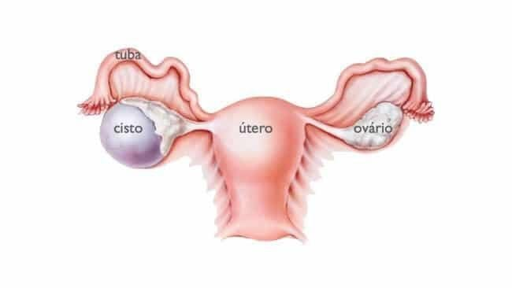
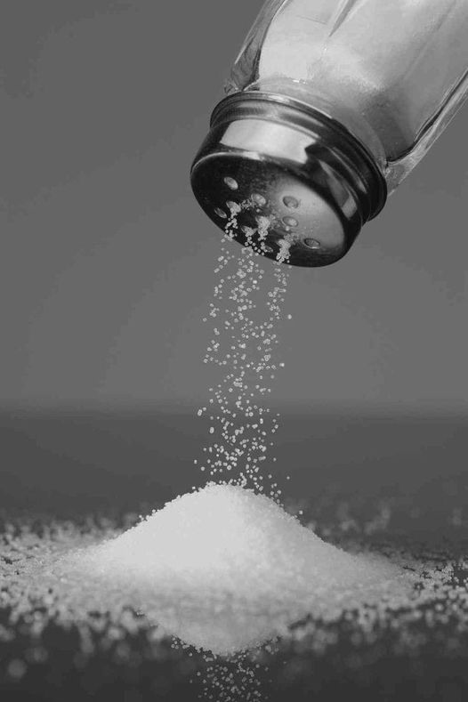
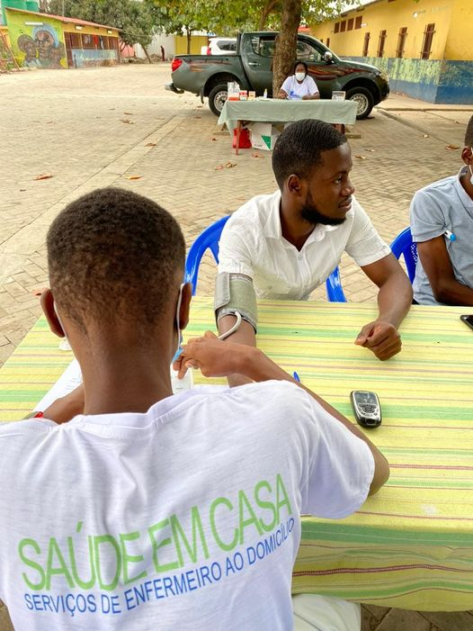
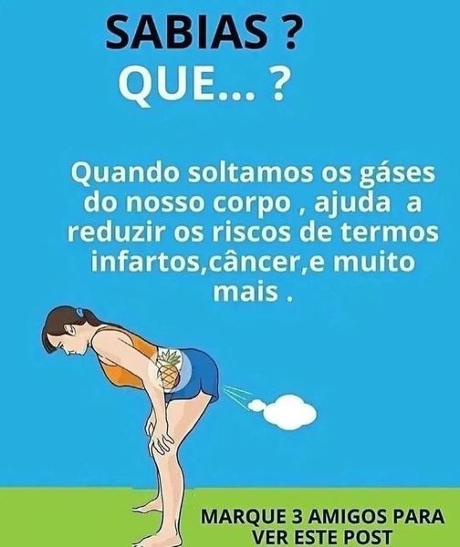
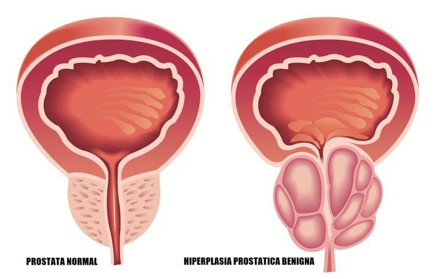

Recomendações
Manga
Manga Daqui apouco veremos em nossas bancas 😁 ,sabes o porquê que deves comprar e comer??? Elas são ricas em👇👇👇 Se o assunto são as vitaminas da manga, destacam-se A e C, além de outros nutrientes importantes como fibras, antioxidantes, cálcio, zinco, potássio, ferro e magnésio. 🥭Como resultado, esse alimento traz diversos benefícios à saúde. Já tens motivos de comer😁. A proveita! Se tem uma fruta que nós ensina a respeitar o tema é a 🥭 Manga. Tudo tem o seu tempo aproveite 😁. Saúde em casa Saúde em casa

Cisto no Ovário
Mulheres com Cisto no Ovário podem engravidar?🫄 Sim, pois raramente cistos ovarianos causam infertilidade. Portanto, mulheres que possuem cisto no ovário podem engravidar (mesmo que seja somente no ovário esquerdo, direito ou ambos). O que acontece é que o cisto dificulta a gravidez, pelas alterações hormonais que causa. Por isso, para quem possui cisto no ovário e deseja engravidar, o recomendado é realizar a consulta e o acompanhamento ginecológico para obter uma orientação profissional sobre uma forma de tratamento adequada à gravidez.
Sorrir
Sorrir 🤣😘😘🤣 Sabes que faz bem??? 😁😂Sorrir rejuvenesce e aumenta a longevidade, pois movimenta a musculatura do rosto, ajudando a manter a elasticidade da pele. 😂😅Sorrir diminui a intensidade de emoções negativas como a tristeza e relaxa o corpo inteiro. 😁😄Alivia a tensão e o estresse e mantém os músculos relaxados por até 45 minutos
Roupas
Sabias que as roupas muito justas fazem mal a saúde???🎽👚 Pode até parecer inofensivo, mas o uso de roupas apertadas pode trazer consequências graves para a sua saúde. Usar roupas muito justas não aumenta só a retenção de líquidos e toxinas, mas também o risco de ter celulites e depósitos de gorduras em algumas partes do corpo. Fica a dica ☝️ Saúde em casa 😀
Sal
Sabias que o sal faz bem??? O sal é uma substancia vital para os seres humanos; nosso corpo possui sais que são regulados pelos rins e pela transpiração. O sódio está envolvido na contração muscular, incluindo os batimentos cardíacos, nos impulsos nervosos e na ingestão de proteínas. Sem o consumo de 🧂 sal a pessoa pode causar cretinismo em crianças (retardo mental grave e irreversível), surdo-mudez, anomalias congênitas, bem como a manifestação clínica mais visível – bócio (crescimento da glândula tireóide. Fica a dica ☝️. Saúde em casa 😁🏠

Doces
Sabias que os doces também fazem bem a saúde?? Então veja a dica👇👇 Doces também são fontes de minerais O açúcar também é rico em ferro, sódio, magnésio, vitamina B, cálcio e potássio, ajudando no fortalecimento de ossos e musculaturas. Quando tiveres a estudar muito e veres que a cabeça está a doer ,coma alguma coisa doce , porque deve ser que estais sem açúcar. Açúcar é energia. Fica a dica
🍺 Alcoolismo 🍻
🍺 Alcoolismo 🍻 Os problemas relacionados com o álcool ( inclusive morte por intoxicação,crime e acidente ) . Efeitos do álcool sobre o organismo O fígado aumenta de volume.Os resíduos do álcool destroem as células do fígado provocando uma inflamação.Essa inflamação é muito grave.Os olhos da pessoa ficam de cor amarelada,ela pode entrar em coma e morrer. A destruição das células também pode levar a uma lesão no fígado chamada virose hepática. Esta é uma doença grave e incurável. 🧪🌡️ Organismo afetado🌡️ *No aparelho digestivo o álcool provoca gastrite, úlcera, diabete e contribui para o aparecimento de câncer da língua,da faringe,do esófago,do estômago e do intestino. *O álcool pode provocar anemia *O álcool pode provocar gota e reumatismo.. *O alcoólatra é menos resistente a infecções e envelhece antes do tempo. *O álcool,com o tempo ,leva á impotência (5a 25). Mais dicas segue a página. Ou liga943021515
Doenças infecciosas
As doenças infecciosas são causadas por bactérias e outros organismos que prejudicam o nosso
corpo.Os organismos agressores entram no corpo de uma pessoa e "passam"de uma pessoa para a outra de
diferentes maneiras.
Os antibióticos ajudam a curar algumas doenças causas por bactérias.Não têm nenhum efeito nas
doenças causadas por vírus.Nunca trate infecções causadas por vírus com antibiótico,pois neste casos
o antibiótico não ajuda e pode fazer mal.
👍 Doenças causadas por bactérias
*Feridas com pus
*Tuberculose
*Tétano
*Meningite
*Pneumonia
*Gonorreia e sífilis
Cura com antibiótico
👍 Doenças causadas por vírus
*Resfriado
*Sarampo e cataporas
*Cacimba
*Paralisia infantil
*Raiva
*Verrugas.
Não curam com antibiótico.
Pra mais dicas segue a página 👍
Ou liga 943021515.
Hipertensão Arterial
Hipertensão Arterial: É uma Doença crônica não transmissível do sistema Cardiovascular❤️. Ela
determina-se por elevados níveis de pressão sanguínea nas artérias🌡️. O seu valor normal é de:
120/70 mmHg(milímetro de mercúrio).
Os seus factores de Risco incluem:
✓Estresse🤦
✓Consumo de Bebida alcoólica🍻
✓Sedentarismo
✓Idade🧑🦳 e até mesmo Factor genético👪.
Quando o indivíduo está com a mesma Patologia, tende apresentar os seguintes sintomas:
✓Cefaleia😞
✓Nausea e vómito
✓Alteração do nível de consciência ( Agitação, Prostração)😖
Sendo ela não tratável, a maneira de ser controlada é: Praticando ✓Exercícios físicos🏃; ✓Não abusar
do Sódio e por sua vez, evitando alimentos gordurosos🌭🍔.
"Melhor do que usar métodos Paliativos, o ideal é ser Profilático".
#SAÚDE EM CASA🫂
Precisas de alguém para aferir a tua pressão liga:943021515

Peidar
Abobrinha
Câncer da próstata
🤔O que é a próstata? A próstata é uma glândula presente apenas nos homens, localizada na frente do reto, abaixo da bexiga, envolvendo a parte superior da uretra (canal por onde passa a urina). A próstata não é responsável pela ereção nem pelo orgasmo. Sua função é produzir um líquido que compõe parte do sêmen, que nutre e protege os espermatozoides. Em homens jovens, a próstata possui o tamanho de uma ameixa, mas seu tamanho aumenta com o avançar da idade. 🤔🤔Quais os fatores de riscos? *Idade: o risco aumenta com o avançar da idade. *Histórico de câncer na família: homens cujo o pai, avô ou irmão tiveram câncer de próstata antes dos 60 anos, fazem parte do grupo de risco. *Sobrepeso e obesidade: estudos recentes mostram maior risco de câncer de próstata em homens com peso corporal mais elevado. 🤔🤔 Como prevenir? 👍Já está comprovado que uma dieta rica em frutas, verduras, legumes, grãos e cereais integrais, e com menos gordura, principalmente as de origem animal, ajuda a diminuir o risco de câncer, como também de outras doenças crônicas não-transmissíveis. Nesse sentido, outros hábitos saudáveis também são recomendados, como fazer, no mínimo, 30 minutos diários de atividade física, manter o peso adequado à altura, diminuir o consumo de álcool e não fumar. Entre os fatores que mais ajudam a prevenir o câncer de próstata estão: *Ter uma alimentação saudável. *Manter o peso corporal adequado. *Praticar atividade física. *Não fumar. *Evitar o consumo de bebidas alcoólicas 🤔Sinais e sintomas Na fase inicial, o câncer de próstata pode não apresentar sintomas e, quando apresenta, os mais comuns são: *dificuldade de urinar; *demora em começar e terminar de urinar; *sangue na urina; *diminuição do jato de urina; *necessidade de urinar mais vezes durante o dia ou à noite. 🤔 Quais exames são feitos para investigar o câncer de próstata? *Exame de toque retal: o médico avalia tamanho, forma e textura da próstata, introduzindo o dedo protegido por uma luva lubrificada no reto. Este exame permite palpar as partes posterior e lateral da próstata. *Exame de PSA: é um exame de sangue que mede a quantidade de uma proteína produzida pela próstata - Antígeno Prostático Específico (PSA). Níveis altos dessa proteína podem significar câncer, mas também doenças benignas da próstata. SECRETARIA DA SAÚDESECRETARIA DA SAÚDE Navegação Principal SESA Início Institucional Ouvidoria Clique Saúde Assistência Farmacêutica Atenção e Vigilância Unidades Comunicação Sistemas de Informação Intranet Recursos Humanos Serviços para você! Câncer de próstata O que é câncer de próstata? Câncer de próstata é o tumor que afeta a próstata, glândula localizada abaixo da bexiga e que envolve a uretra, canal que liga a bexiga ao orifício externo do pênis. O câncer de próstata é o mais frequente entre os homens, depois do câncer de pele. Embora seja uma doença comum, por medo ou por desconhecimento muitos homens preferem não conversar sobre esse assunto. As estimativas apontam 68.220 novos casos em 2018. Esses valores correspondem a um risco estimado de 66,12 casos novos a cada 100 mil homens, além de ser a segunda causa de morte por câncer em homens no Brasil, com mais de 14 mil óbitos. Na presença de sinais e sintomas, recomenda-se a realização de exames. A doença é confirmada após fazer a biópsia, que é indicada ao encontrar alguma alteração no exame de sangue (PSA) ou no toque retal, que somente são prescritos a partir da suspeita de um caso por um médico especialista. As células são as menores partes do corpo humano. Durante toda a vida, as células se multiplicam, substituindo as mais antigas por novas. Mas, em alguns casos, pode acontecer um crescimento descontrolado de células, formando tumores que podem ser benignos ou malignos (câncer). O câncer de próstata, na maioria dos casos, cresce de forma lenta e não chega a dar sinais durante a vida e nem a ameaçar a saúde do homem. Em outros casos, pode crescer rapidamente, se espalhar para outros órgãos e causar a morte. Esse efeito é conhecido como metástase. O que é a próstata? A próstata é uma glândula presente apenas nos homens, localizada na frente do reto, abaixo da bexiga, envolvendo a parte superior da uretra (canal por onde passa a urina). A próstata não é responsável pela ereção nem pelo orgasmo. Sua função é produzir um líquido que compõe parte do sêmen, que nutre e protege os espermatozoides. Em homens jovens, a próstata possui o tamanho de uma ameixa, mas seu tamanho aumenta com o avançar da idade. As informações presentes nesta página têm por objetivo apoiar e informar dados úteis sobre o câncer de próstata, mas não substituem, em hipótese alguma, a consulta médica. Em casos de suspeita, procure um médico especialista de sua confiança para avaliação. Quais os fatores de risco? Existem alguns fatores que podem aumentar as chances de um homem desenvolver câncer de próstata. São eles: Idade: o risco aumenta com o avançar da idade. No Brasil, a cada dez homens diagnosticados com câncer de próstata, nove têm mais de 55 anos. Histórico de câncer na família: homens cujo o pai, avô ou irmão tiveram câncer de próstata antes dos 60 anos, fazem parte do grupo de risco. Sobrepeso e obesidade: estudos recentes mostram maior risco de câncer de próstata em homens com peso corporal mais elevado. Frequência Como prevenir? Já está comprovado que uma dieta rica em frutas, verduras, legumes, grãos e cereais integrais, e com menos gordura, principalmente as de origem animal, ajuda a diminuir o risco de câncer, como também de outras doenças crônicas não-transmissíveis. Nesse sentido, outros hábitos saudáveis também são recomendados, como fazer, no mínimo, 30 minutos diários de atividade física, manter o peso adequado à altura, diminuir o consumo de álcool e não fumar. Entre os fatores que mais ajudam a prevenir o câncer de próstata estão: Ter uma alimentação saudável. Manter opeso corporal adequado. Praticar atividade física. Não fumar. Evitar o consumo de bebidas alcoólicas. Sinais e sintomas Na fase inicial, o câncer de próstata pode não apresentar sintomas e, quando apresenta, os mais comuns são: dificuldade de urinar; demora em começar e terminar de urinar; sangue na urina; diminuição do jato de urina; necessidade de urinar mais vezes durante o dia ou à noite. Se você tiver algum desses sintomas, procure uma unidade de saúde e faça os exames necessários com médico especialista de sua confiança. Esses sinais e sintomas também ocorrem devido a doenças benignas da próstata. Por exemplo: Hiperplasia benigna da próstata é o aumento benigno da próstata. Afeta mais da metade dos homens com idade superior a 50 anos e ocorre naturalmente com o avançar da idade. Prostatite é uma inflamação na próstata, geralmente causada por bactérias. Na presença de sinais e sintomas, recomenda-se a realização de exames para investigar o câncer de próstata. Quais exames são feitos para investigar o câncer de próstata? Para investigar os sinais e sintomas de um câncer de próstata e descobrir se a doença está presente ou não, são feitos basicamente dois exames iniciais. Exame de toque retal: o médico avalia tamanho, forma e textura da próstata, introduzindo o dedo protegido por uma luva lubrificada no reto. Este exame permite palpar as partes posterior e lateral da próstata. Exame de PSA: é um exame de sangue que mede a quantidade de uma proteína produzida pela próstata - Antígeno Prostático Específico (PSA). Níveis altos dessa proteína podem significar câncer, mas também doenças benignas da próstata. Qual exame confirma/diagnostica o câncer de próstata? Para confirmar o câncer de próstata é preciso fazer uma biópsia. Nesse exame são retirados pedaços muito pequenos da próstata para serem analisados no laboratório. A biópsia é indicada caso seja encontrada alguma alteração no exame de PSA ou no toque retal. Homens sem sinais ou sintomas precisam fazer exames para o câncer de próstata? Alguns especialistas são contra de se fazer exames de rotina em homens sem sintomas, pois pode trazer tanto benefícios quanto riscos à saúde. Outros, no entanto, são a favor. Benefícios: realizar o exame pode ajudar a identificar o câncer de próstata logo no inicio da doença, aumentando assim a chance de sucesso no tratamento. Tratar o câncer de próstata na fase inicial pode evitar que se desenvolva e chegue a uma fase mais avançada. Riscos: ter um resultado que indica câncer, mesmo não sendo, gera ansiedade e estresse, além da necessidade de novos exames, como a biópsia. Diagnosticar e tratar um câncer que não evoluiria e nem ameaçaria a vida. O tratamento pode causar impotência sexual e incontinência urinária. Os riscos desses exames estão relacionados às consequências dos seus resultados e não à sua realização. O Ministério da Saúde, assim como a Organização Mundial da Saúde (OMS), não recomenda que se realize o rastreamento do câncer de próstata, ou seja, não é indicado que homens sem sinais ou sintomas façam exames. Procure conhecer os riscos e os benefícios que envolvem a realização desses exames de rotina e converse com um profissional de saúde da sua confiança para decidir se deseja ou não realizá-los. 🤔Qual o tratamento? O câncer de próstata é feito por meio de uma ou de várias modalidades/técnicas de tratamento, que podem ser combinadas ou não. A principal delas é a cirurgia, que pode ser aplicada junto com radioterapia e tratamento hormonal, conforme cada caso. Quando localizado apenas na próstata, o câncer de próstata pode ser tratado com cirurgia oncológica, radioterapia e até mesmo observação vigilante, em alguns casos especiais. No caso de metástase, ou seja, se o câncer da próstata tiver se espalhado para outros órgãos, a radioterapia é utilizada junto com tratamento hormonal, além de tratamentos paliativos.
Saúde Em Casa
Luanda, Angola
Município do Talatona
Telefone: 943 021 515 / 943 905 799
Email: altino10leandro@gmail.com